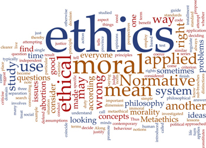

Code of Ethics and Professional Practices
As a member of the Association of Professional Genealogists I agree that professionalism in genealogy requires ethical conduct in all relationships with the present or potential genealogical community. I therefore agree to:
- Present research results and opinions in a clear, well-organized manner;
- Refrain from withholding, suppressing, or knowingly misquoting or misinterpreting sources or data;
- Report appropriately qualified genealogical conclusions in writing based on the weight of the evidence with fully and accurately cited sources;
- Represent my abilities, services, and credentials honestly, avoiding the use of misleading or exaggerated statements;
- Engage in sufficient continuing education to maintain competence and comply with applicable requirements;
- Prepare and abide by written agreements regarding applicable project scope, fees, charges, payment structures, and deliverables without concealment or misrepresentation;
- Disclose potential conflicts of interest;
- Maintain confidentiality of client communications and research, except as permitted in writing by the client or required by court or professional disciplinary proceedings;
- Treat information concerning living people with appropriate discretion;
- Refrain from violating or encouraging others to violate laws or regulations concerning copyright, rights to privacy, business practices, or other pertinent subjects;
- Refrain from mutilating, rearranging, or removing from their proper custodians printed, original, microfilmed, or electronic records;
- Give proper credit to the work of others and refrain from plagiarism;
- Refrain from soliciting established clients of another researcher through denigration, violation of laws or regulations, or other improper means;
- Refrain from behaviors or statements that malign or are maliciously calculated to injure the profession; individual genealogists; genealogical associations, programs, or educational organizations; or the Association of Professional Genealogists.
See the APG website for more information. <--add link